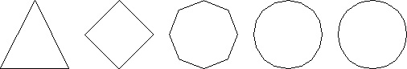
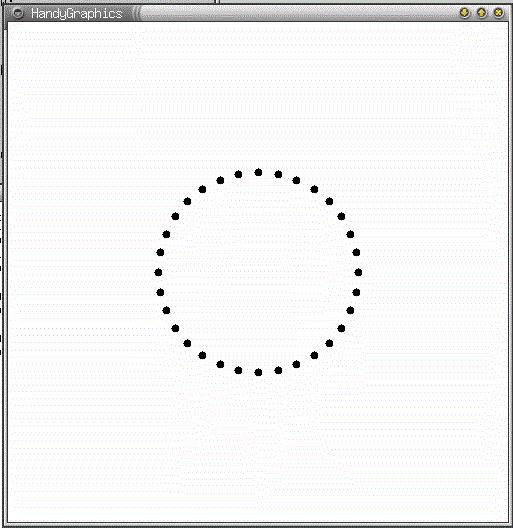
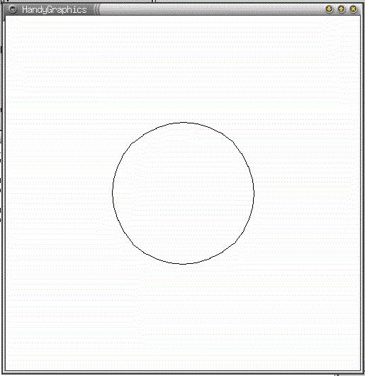

まず、円を描くプログラムを考えてみましょう。円は、正Ｎ角形で近似することが できます。もちろん、このＮの値が小さいときは（例えば正３角形や正４角形）円の ように見えませんが、Ｎの値をどんどん大きくすると円と見なすことができます。

では、まず正32角形の頂点を描くプログラムを示します。
#include <stdio.h>
#include <math.h>
#include <handy.h>
#define PI 3.141592653589793
#define WIDTH 500.0 /* Windowの幅*/
#define HEIGHT 500.0 /* Windowの高さ*/
int main(void)
{
int w;
double x0, y0, r, x, y, t;
int i,imax;
w = HgWOpen( 100.0, 100.0, WIDTH, HEIGHT );
HgWInitEPS(w,"hg_circle.eps"); /* eps ファイルで保存 */
/* Windowの中央を円の中心とする*/
x0=WIDTH/2.0;
y0=HEIGHT/2.0;
/* 円の半径を100とする */
r=100.0;
/* 円を３２分割する */
imax=32;
for ( i = 1; i <= imax; i++ ) {
t = 2.0*PI/imax*i;
x = x0 + r*cos(t);
y = y0 + r*sin(t);
HgWCircleFill(w, x, y, 4.0);
}
getchar();
HgWClose(w);
return 0;
}
以下が、実行例です。

これらの各頂点を直線で結ぶことで円を描くことができます。
#include <stdio.h>
#include <math.h>
#include <handy.h>
#define PI 3.141592653589793
#define WIDTH 500.0 /* Windowの幅*/
#define HEIGHT 500.0 /* Windowの高さ*/
int main(void)
{
int w;
double x0, y0, r, x, y, t, xPrev, yPrev;
int i,imax;
w = HgWOpen( 100.0, 100.0, WIDTH, HEIGHT );
HgWInitEPS(w,"hg_circle.eps"); /* eps ファイルで保存 */
/* Windowの中央を円の中心とする*/
x0=WIDTH/2.0;
y0=HEIGHT/2.0;
/* 円の半径を100とする */
r=100.0;
/* 円を３２分割する */
imax=32;
xPrev = x0 + r*cos(0.0);
yPrev = y0 + r*sin(0.0);
for ( i = 1; i <= imax; i++ ) {
t = 2.0*PI/imax*i;
x = x0 + r*cos(t);
y = y0 + r*sin(t);
HgWLine(w, x, y, xPrev, yPrev);
xPrev = x;
yPrev = y;
}
getchar();
HgWClose(w);
return 0;
}
